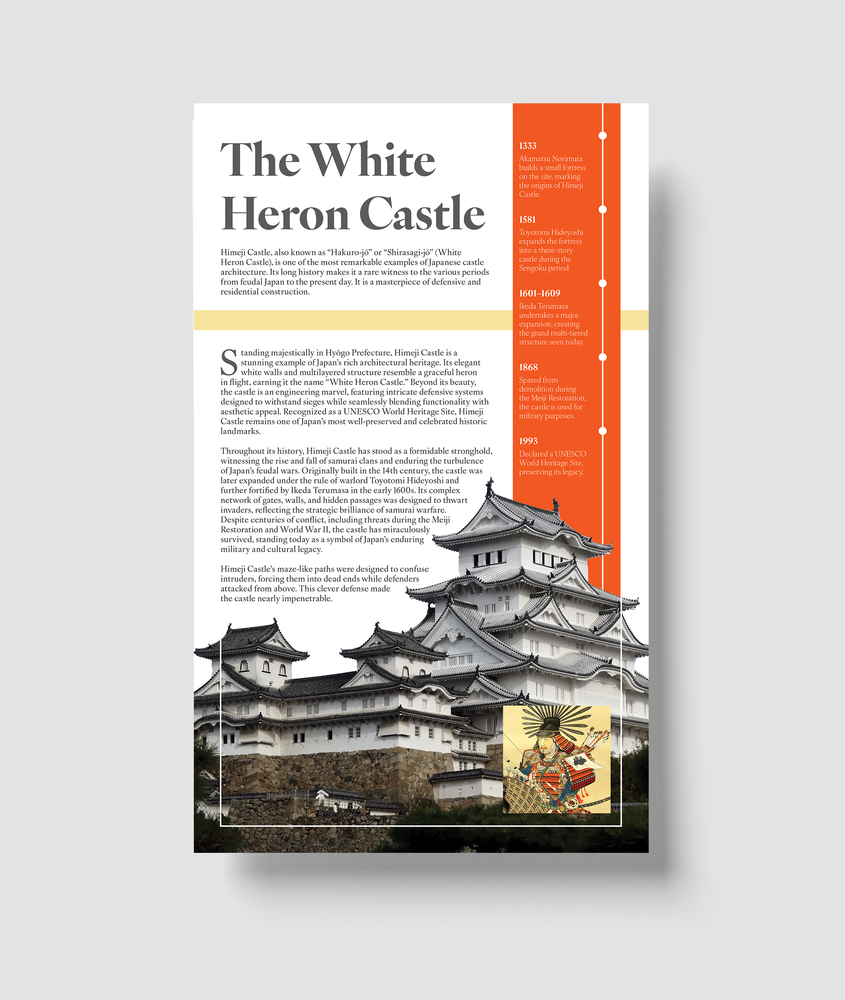

Collection of Past Works
Project 1 - Silver Blood
01

For this project, I created a fictional sequel to the Red Queen series, designing a new book called Silver Blood that could seamlessly fit into a series of five or more existing titles. The goal was to extend the story as a continuation while maintaining consistency with the established characters, themes, and visual style. Using Adobe InDesign and Photoshop, I designed a book cover that blended smoothly with the existing series while standing out as a fresh addition. This project emphasized layout, typography, and visual cohesion, ensuring the new title felt like a natural extension of the series.
Project 2 - Ferrari Magazine Rebrand
02


For this project, I created a rebranded magazine issue for TopGear, focusing on Ferrari as the central theme. The assignment required designing both a magazine cover and a spread from an existing publication, allowing me to put my own creative spin on the original layout. Using Adobe InDesign for layout and Photoshop for image editing, I designed a cohesive, visually striking magazine that reflected Ferrari’s iconic style while adhering to the magazine’s established aesthetic. This project emphasized typography, composition, and visual hierarchy, ensuring each page was engaging, readable, and true to the brand identity.
Project 3 - IvyOra Font Advertisement
03

For this project, I chose the font IvyOra and created an advertisement highlighting its design and versatility. I designed a magazine spread in the style of a real advertisement, focusing on a music-themed layout. Using primarily Adobe InDesign, I emphasized typographic hierarchy, cascading elements, and visual flow to guide the viewer’s eye through the spread. The design also includes close-ups of the font’s serifs and several of its glyphs subtly placed in the background to showcase its unique features and artistic details. This project allowed me to explore how type can communicate mood, style, and branding within a visually compelling composition.
Project 4 - White Heron Castle Poster
04
For this project, I designed a poster for the White Heron Castle, a historical monument in Japan. The assignment required choosing a monument and creating a visually compelling poster that communicated its history and significance. Using both Adobe InDesign and Photoshop, I combined images, typography, and layout elements to create a clear, engaging design. I also included a small timeline on the poster to highlight key historical moments of the castle, giving viewers context while maintaining a balanced and aesthetically pleasing composition. This project emphasized visual storytelling, composition, and effective information hierarchy.